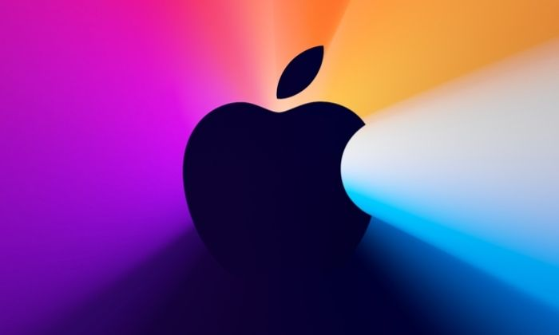

Mac OS

Wondering what the name of the latest macOS version is? Curious about the versions of Mac OS X that came before? Here we'll fill you in on the names of the different versions of the Mac operating system in order: from the newest macOS to the first version of Mac OS X and the codenames that Apple used for them. We'll also show you how you can check which version of macOS you are running and find out what the latest version of macOS is.
If you are wondering what the latest version of macOS is it's Big Sur! And rather than macOS 10.16, it is macOS 11. For more information about Big Sur read: macOS Big Sur latest version. Later in 2021 a new macOS will arrive called macOS Monterey. Read: Everything you need to know about macOS Monterey.
Mac OS X first launched 20 years ago on 24 March 2001. There's been a lot of change over those two decades: good and bad. From the problems with the first edition (it was slow and didn't run important apps like Microsoft Word) Mac OS X has evolved through various iterations and various designs to what we know today. We've seen tight integration with iOS devices, the incorporation of the cloud, and the arrival of excellent and helpful features including integrated Time Machine back ups, Quick Look - which lets you see a preview of a document without opening the application, and innovations like Expose and Spaces and Desktop Stacks to help you work efficiently.
In this article we will run though the long history of Mac OS X, or macOS as it is now known.
For an overview of the features of the various versions of the Mac operating system, showing how it has developed over time, take a look at our video above. If you want to know the names Apple assigned to Mac OS X over the years, and the codenames that were used internally, read on.
List of macOS version names
Here's an overview of every version of macOS and Mac OS X Apple has released. You'll find a complete list of OS X version code names, along with internal code names (if available):
OS X 10 beta: Kodiak - 13 September 2000
OS X 10.0: Cheetah - 24 March 2001
OS X 10.1: Puma - 25 September 2001
OS X 10.2: Jaguar - 24 August 2002
OS X 10.3 Panther (Pinot) - 24 October 2003
OS X 10.4 Tiger (Merlot) - 29 April 2005
[OS X 10.4.4 Tiger (Chardonnay)]
OS X 10.5 Leopard (Chablis) - 26 October 2007
OS X 10.6 Snow Leopard - 28 August 2009
OS X 10.7 Lion (Barolo) - 20 July 2011
OS X 10.8 Mountain Lion (Zinfandel) - 25 July 2012
OS X 10.9 Mavericks (Cabernet) - 22 October 2013
OS X 10.10: Yosemite (Syrah) - 16 October 2014
OS X 10.11: El Capitan (Gala) - 30 September 2015
macOS 10.12: Sierra (Fuji) - 20 September 2016
macOS 10.13: High Sierra (Lobo) - 25 September 2017
macOS 10.14: Mojave (Liberty) - 24 September 2018
macOS 10.15: Catalina (Jazz) - 7 October 2019
macOS 11: Big Sur - 12 November 2020
macOS 12: Monterey - ETA October 2021 (announced 7 June 2021)
We have a full list of which Macs run which versions of Mac OS X and macOS here.
Mac OS X & macOS names
As you can see from the list above, with the exception of the first OS X beta, all versions of the Mac operating system from 2001 to 2012 were all named after big cats, from Cheetah to Panther to Mountain Lion.
But while the public-facing builds were named after big cats, internally, they were named after wines (aside from OS X 10.6 and macOS 10.13, both of which had no codename).
Even after Apple switched public-facing code-names to places in California back in 2013, it carried on naming them after wines internally until 2014. In 2015, Apple decided to change the theme of internal code-names from wines to types of apple. Original.
In 2016, Apple took the plunge to unify the branding of its operating systems by rebranding Mac OS X to macOS, which sits nicely alongside iOS, tvOS and watchOS, and paved the way for macOS 11, the successor to Mac OS X, which arrived twenty years after the first beta of Mac OS X.
What's the latest macOS?
Wondering what the latest version of macOS is? It is currently macOS Big Sur, also known as macOS 11. If it is compatible with your Mac you can download Big Sur via System Preferences > Software Update. Or Download Big Sur from the Mac App Store.
Whichever version of macOS you are running you should always keep it up-to-date with Apple's latest updates and security fixes. Apple releases various updates to the OS throughout the year, so you can expect updates from time to time. We have a dedicated article with details of new features and security fixes in the latest version of Big Sur.
The version of macOS before Big Sur was Catalina. We have this comparison of Big Sur and Catalina so you can see what's changed. Download Catalina here. For the latest security update information read about the latest version of Catalina here.
Prior to the release of Catalina was macOS 10.14 Mojave. Version 10.14.6 arrived on 26 September 2019. Download Mojave here. Apple keeps the past three versions of macOS up to date with security fixes, so, until the new version of macOS launches, Mojave will be included in these necessary updates. Find out about the latest version of macOS Mojave here.
How to tell which macOS you are running
You can tell which version of macOS you are running by clicking on the Apple logo in the top left and choosing About This Mac.

How to update to the newest macOS
If you want to update your Mac to a newer version of macOS the method will be determined by the version of macOS you are running.
Very old versions of Mac OS X came on a disk and any security updates came via Software Update. Since the arrival of the Mac App Store in 2011 (as an update to Snow Leopard) versions of Mac OS X and macOS have been available to download via the Mac App Store.
However, that changed slightly with Mojave, which arrived in 2018. Now operating system updates come in via a new Software Updates pane in System Preferences. You can still find the software in the Mac App Store, but you should just see it in System Preferences > Software Update.
You can get to System Preferences from the Apple menu: Click on the Apple logo in the top left and choose System Preferences. You may be taken straight to the Software Update pane, if not click on the Software Update cog icon. Your Mac will search for an update and if there is one you can choose Update Now.
Some Macs will be set to update macOS automatically. If you want your Mac to update automatically follow these steps:
In Mojave or Catalina:
- Open System Preferences.
- Click on Software Update.
- Check the box beside Download new updates when available.
- Now select the box Install macOS updates.
In High Sierra or earlier:
- Open System Preferences.
- Click on App Store.
- Check the box beside Automatically check for updates - it should have a tick in it as should the four options below that…
- Now deselect the box beside Download newly available updates in the background.
See Also: Mac